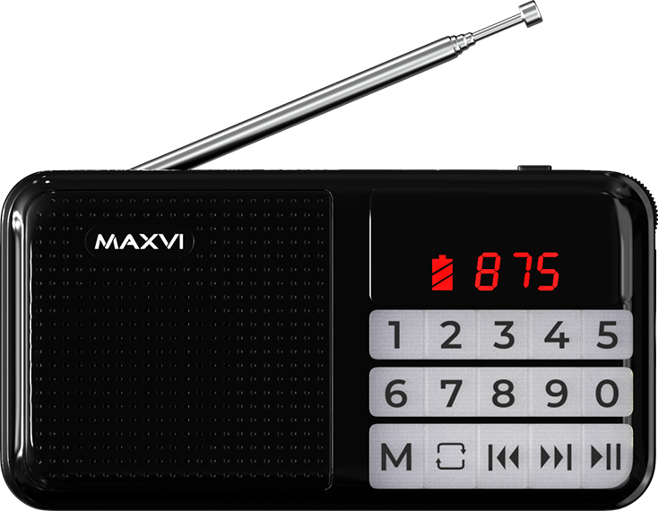

PR-02
ПРИЁМНИК С
ВОЗМОЖНОСТЬЮ
СОХРАНЕНИЯ
РАДИОСТАНЦИЙ
СКЛАДНАЯ
ТЕЛЕСКОПИЧЕСКАЯ АНТЕННА
для лучшего приема сигнала
ПОДКЛЮЧЕНИЕ ВНЕШНИХ НАКОПИТЕЛЕЙ
Карты памяти microSD и внешний USB-накопитель
КНОПКИ УПРАВЛЕНИЯ ПРИЁМНИКОМ
Воспроизведение, Переключение треков / радиостанций
ВОЗЬМИ С СОБОЙ ХОРОШЕЕ НАСТРОЕНИЕ
